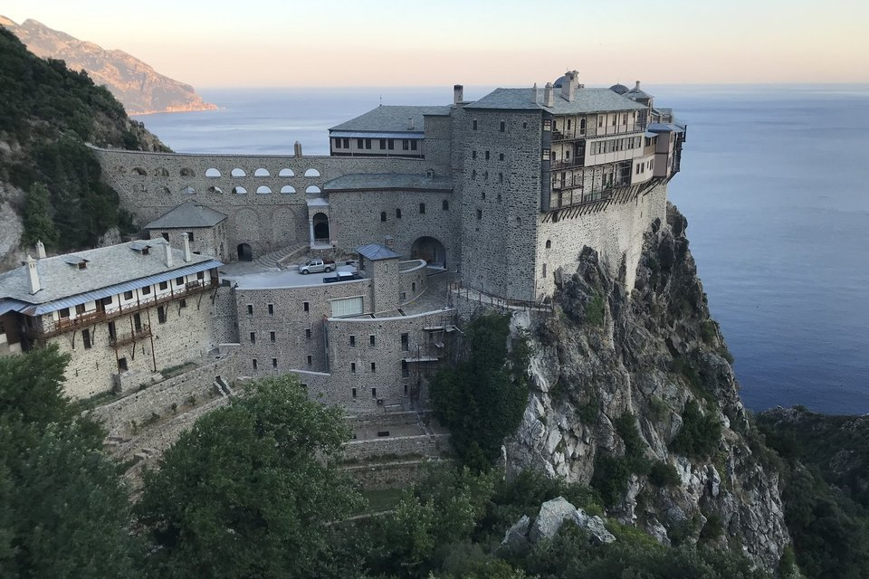

Greece · Ouranoupoli
Mount Athos cruise audio guide
6 stops · 9 min · offline · plays as you arrive
This guide is Free in the app when it launches. Checkout is not open yet; this button is a placeholder. Email hello@getearwise.com.
A 6-stop offline audio guide to Mount Athos cruise in Ouranoupoli, recorded in 10 languages and designed to play as you arrive. It covers the coastal monasteries and terraced sketes of the Holy Mountain seen from offshore. Download once; you will not need a signal on the ground.
Stops
- 1
Ouranoupoli
On the boat as it leaves the harbour of Ouranoupoli, with the old tower on the shore. This is stop 1 on the route.
Play0:00 / –:–– - 2
The border of the Holy Mountain
On the boat, level with the border of the monastic territory near the ruins at Frangokastro. (Boat stop: manual play.). This is stop 2 on the route.
Play0:00 / –:–– - 3
Xenophontos
On the boat, opposite the monastery on the shore. (Boat stop: manual play.). This is stop 3 on the route.
Play0:00 / –:–– - 4
St Panteleimon
On the boat, opposite the large monastery on the shore. (Boat stop: manual play.). This is stop 4 on the route.
Play0:00 / –:–– - 5
Simonopetra
On the boat, opposite the monastery perched high on its rock. (Boat stop: manual play.). This is stop 5 on the route.
Play0:00 / –:–– - 6
The summit of Athos
On the boat, looking south-east towards the peak at the end of the peninsula. (Boat stop: manual play.). This is stop 6 on the route.
Play0:00 / –:––
On the map
All 6 stop pins for this guide are marked. Open map